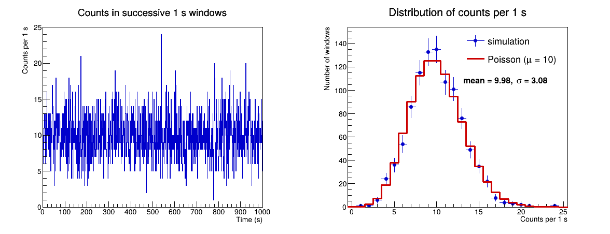
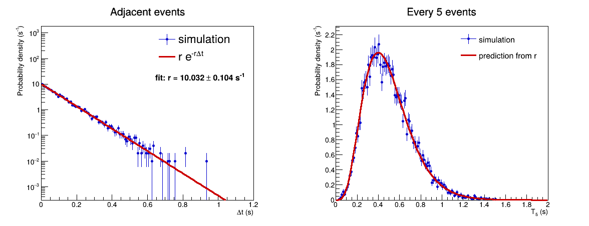

相邻事件时间间隔分布
在有限观测时间内均匀产生随机事件时刻，将这些时刻排序并作差，可以得到相邻事件的时间间隔。本教程从这一过程出发，验证时间间隔的指数规律，并由拟合恢复事件的平均计数率。
1. 在观测时间内均匀产生事件
设事件的平均计数率为 \(r\)。观测时间 \(T\) 内的总事件数 \(n\) 服从均值为 \(rT\) 的 Poisson 分布；给定 \(n\) 后，每个事件时刻都可以由区间 \([0,T]\) 上的均匀分布产生。

设 \(r=10\ \mathrm{s}^{-1}\)、\(T=1000\ \mathrm{s}\)。左图显示连续 1 s 时间窗内的计数；右图显示计数分布与 Poisson 期望相符。
这种生成方式同时保留了固定时间内计数的 Poisson 涨落和事件时刻的均匀性。将事件时刻排序后，可以进一步研究时间间隔。
2. 排序并计算相邻事件时间间隔
先将事件时刻按从小到大的顺序排列。对于一个远离观测边界的事件，其他 \(n-1\) 个均匀事件都不落入其后长度为 \(\tau\) 的时间段内的概率为
对等待时间的累积分布求导，得到相邻事件时间间隔的概率密度：
3. 每 \(N\) 个事件的时间间隔
记按时间排序的事件时刻为 \(t_i\)。相邻事件的间隔是 \(t_i-t_{i-1}\)；每 \(N\) 个事件的间隔定义为
\(T_N\) 是 \(N\) 个相邻时间间隔之和。将指数分布连续卷积 \(N\) 次可得
因此，间隔包含的事件数增加时，分布不再从 \(t=0\) 单调下降，而是在有限时间处出现峰值。图中以 \(N=5\) 为例。

由均匀事件时刻得到相邻事件间隔。设定 \(r=10\ \mathrm{s}^{-1}\)，指数拟合得到 \(r=10.032\pm0.104\ \mathrm{s}^{-1}\)；右图使用同一计数率预测每 5 个事件的时间间隔。
相关练习见作业 2.1：相邻事件时间间隔。